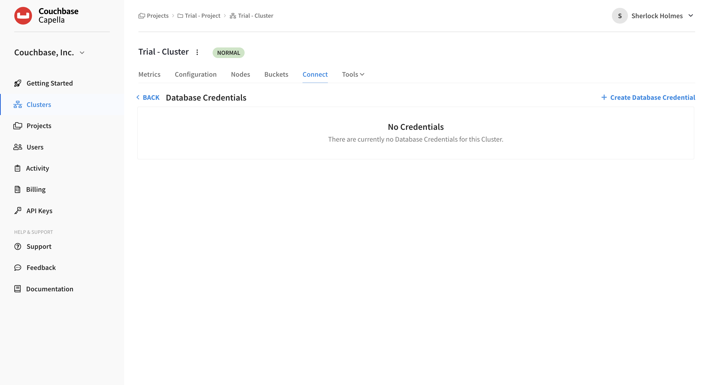
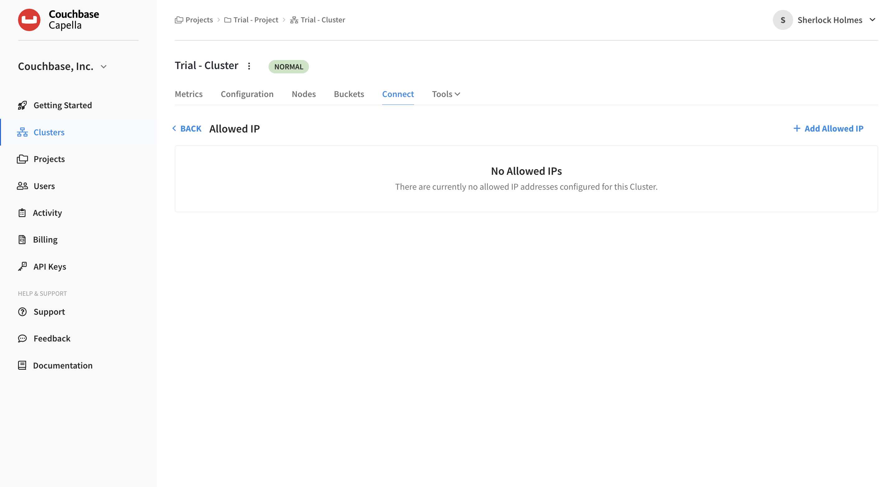
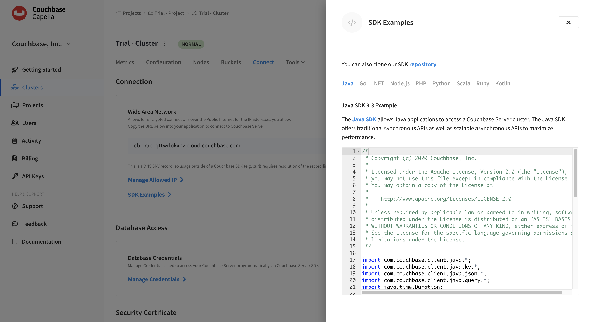
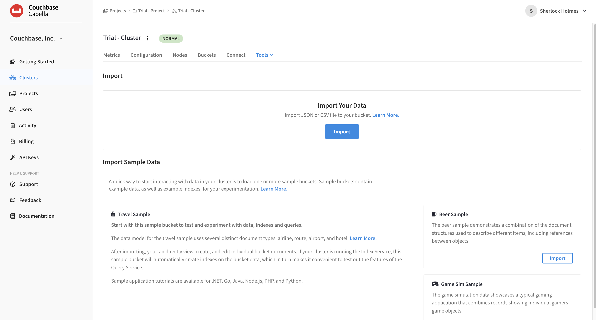

Connecting to Your Database
Connecting to your trial cluster will provide you with programmatic and application-level access to its data.
Essential Steps
Connecting to your Capella trial cluster will allow you to access our pre-loaded travel-sample dataset or load your own data. For more information on the travel-sample dataset, visit the Travel App Data Model page.
-
Step 1: Creating Database Credentials
-
Step 2: Allowed IP Addresses
-
Step 3: Connecting to Capella Using SDKs
-
Step 4: SDK Code Examples
-
Step 5: Add Your Data (Optional)
Creating Database Credentials
To connect your IDE or external application to Capella, you must define at least one set of database credentials.
| Remember that database credentials are different from Capella users and their roles. While users allow you to log into the Couchbase Capella UI and manage Capella features, database credentials are only for reading or writing bucket data using the Couchbase SDK and other supported tools. |
-
On the left side of the page, click the Clusters tab.
-
Click your cluster name.
-
With the cluster now open, click the Connect tab.
-
Scroll to Database Access and click the Manage Credentials link.
This action opens the Database Credentials screen, which lists any existing database credentials and allows you to create new ones.

-
Click the Create Database Credentials on the right.
This action opens the Create Database Credentials fly-out menu.
-
Enter a username and password.
-
Choose All Buckets, All Scopes, and Read/Write.
-
Click Create.
|
See Also
For more information about database credentials and how to manage them, see Configure Database Credentials.
|
Allowed IP Addresses
You must add your own IP address to connect to your cluster.
-
From the Database Credentials screen, click on the Back button.
-
In the Connection section, select Manage Allowed IP.
-
Click Add Allowed IP.
The Allowed IP screen will now be shown.

-
For this exercise, choose the Add Permanent IP block.
-
Beside the IP Address/CIDR Block field, click Add My IP.
-
Your current IP address will automatically fill the IP Address/CIDR Block field.
-
(Optional) Add a descriptive comment.
-
Click the Add IP button.
Your IP address is saved as an Allowed IP for connecting to your cluster.
|
See Also
For more information about configuring and managing allowed IPs, see Configure Allowed IP Addresses.
|
Connecting to Capella Using SDKs
Couchbase services are exposed through the SDK. Whether you are writing key-value applications or querying via N1QL, Couchbase’s SQL language.
Couchbase SDKs are available for developers to access clusters using their favorite IDE. For more information on SDKs, see SDKs & Connectors.
SDK Code Examples
Head back to the Capella UI and the Cluster section, Connect tab:
-
Click on the SDK Examples link.
This action opens the SDK Examples fly-out menu.
-
Check out the samples for Java, Go, .NET, Node.js, PHP, Python, Scala, Ruby, and Kotlin.
 -
Copy and paste a sample into your IDE.
-
Replace
usernameandpasswordwith your new database credentials. -
For
bucketName, replace the entry withtravel-sample.
From your IDE you should now be able to connect, create a JSON document, and run a Couchbase N1QL query.
|
See Also
For more information about Couchbase SDKs, see SDKs & Connectors and the SDK section of our Developer Tutorials, which include tutorials on building sample applications.
|
Add Your Data (Optional)
To load your own data into Capella, do the following.
-
Within your Cluster section of the UI, click .
The Import screen will now be shown.
 -
Near the top of the screen, click Import.
The Import Documents fly-out menu can walk you through all the steps to import JSON or CSV data to your database.
|
If you load data into a new bucket you have created, you will need to build an index before performing a N1QL query. (A primary index is the simplest, but not recommended for production environments.) Do this:
Learn more about the Index Service in the documentation. |
|
See Also
For more information on importing data to Couchbase Capella, see Import Data.
|
Next Steps
The next step is to query your data — using our SQL-based querying language.